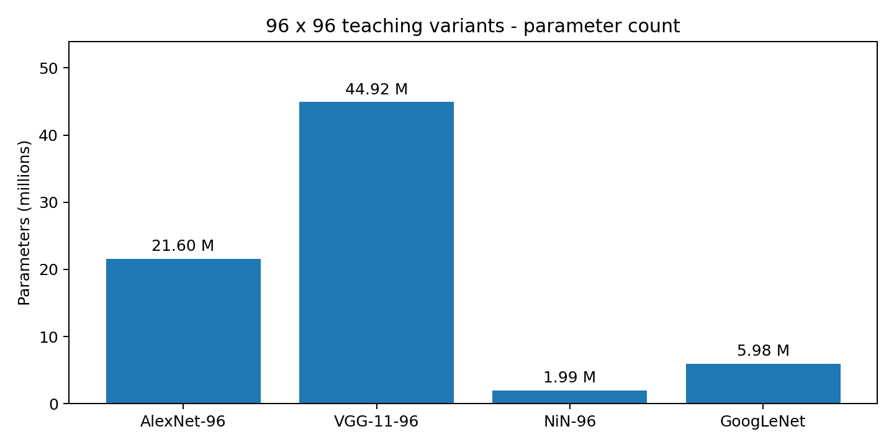
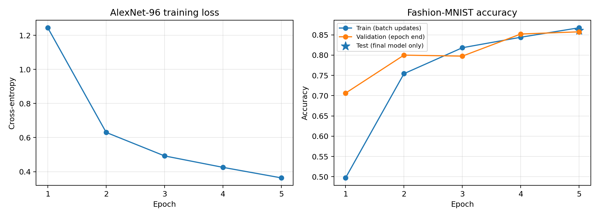

上周从二维互相关、池化走到LeNet，本周继续学习《动手学深度学习》第7章7.1—7.4。问题从“卷积怎样计算”变成了“怎样把卷积组织成更深的网络”：AlexNet加深特征提取，VGG重复相同的块，NiN在每个像素位置混合通道，GoogLeNet则把不同尺度的分支组合起来。
本周实际完成：8个编号示例运行成功，6项自动测试通过。四种网络完成结构与组件验证，其中AlexNet的96×96教学变体用12,000张图片训练5轮，最终验证准确率85.75%，官方测试集准确率86.09%。本周只对这一模型进行数据训练，其他三种结构尚未做相同预算的性能实验。
这篇复盘主要记录
- AlexNet与VGG怎样加深卷积网络
- NiN的1×1卷积和全局平均池化
- Inception如何降维并拼接多尺度分支
- 小规模训练、独立验证与最终测试的实际结果
一、AlexNet从LeNet继续向深处走
AlexNet延续“卷积提取特征，再用分类头输出类别”的思路，但使用五层卷积、更多通道和更宽的全连接层。ReLU用分段线性激活替代LeNet示例中的sigmoid；Dropout放在全连接部分，在训练时随机屏蔽部分激活，减轻共同适应。Dropout在评估模式下关闭，所以训练与验证必须分别调用train()和eval()。
本周没有训练ImageNet，也没有直接使用教材224×224的训练设置。为了运行紧凑的教学实验，输入统一调整到96×96，AlexNet首层采用11×11核、步幅4且不填充。它经过卷积和池化后变成256×1×1，因此第一层线性映射应为256→4096。教材224×224、首层padding=1的示例则是6400→4096。输入分辨率变了，不能只修改读图尺寸。
# 本周96×96输入，末端特征为(batch, 256, 1, 1)
nn.Flatten()
nn.Linear(256, 4096)
nn.ReLU()
nn.Dropout(0.5)
nn.Linear(4096, 4096)
nn.ReLU()
nn.Dropout(0.5)
nn.Linear(4096, 10)模型仍保留五层卷积和两个4096宽度的隐藏层，但分类头输入维度发生变化。参数量统计和后面的实验结果，均对应这个明确的教学变体。
二、VGG把重复的卷积组织成块
VGG的重要思路是把“若干个3×3卷积与ReLU，再接一次最大池化”封装成一个块。每次卷积用padding=1保持空间尺寸，块末端的2×2、步幅2池化再把宽高减半。网络的深度和通道数通过配置表描述，结构更容易复用和核对。
def vgg_block(num_convs, in_channels, out_channels):
layers = []
for _ in range(num_convs):
layers.extend([
nn.Conv2d(in_channels, out_channels, 3, padding=1),
nn.ReLU(),
])
in_channels = out_channels
layers.append(nn.MaxPool2d(2, 2))
return nn.Sequential(*layers)VGG-11中的“11”按带参数的层计数：8层卷积加3层线性层，ReLU、池化和Dropout不计入这个数字。本周使用64、128、256、512、512的块输出通道，输入96×96经过五次池化后是3×3，分类头的输入因而为512×3×3。
两个步幅1的3×3卷积具有5×5的理论感受野，并在中间引入额外非线性。这不意味着它与单个5×5卷积完全等价，也不意味着任何通道配置下都一定更省参数。感受野、参数量与实际效果需要分别计算。
三、NiN把通道混合留在特征图里
1×1卷积虽然不扩大观察邻域，仍能把同一位置的多个通道重新组合。对每个像素位置，它等价于共享同一个线性映射；加入ReLU并重复堆叠后，就能做更丰富的非线性通道变换。
NiN块先用一个普通空间卷积提取局部特征，再接两个1×1卷积。它不在最后放巨大的全连接分类头，而是让最后一个块输出10个类别通道，再对每个通道的空间位置求平均，形成10个分类分数。
features = torch.randn(2, 10, 3, 5)
pooled = nn.AdaptiveAvgPool2d((1, 1))(features).flatten(1)
expected = features.mean(dim=(2, 3))
torch.testing.assert_close(pooled, expected)
# 输出形状为(2, 10)自适应全局平均池化不需要手写最后特征图的宽高，但前面的卷积和池化仍需要足够大的输入。本周96×96的NiN末端空间图较小，代码主要用于观察结构，没有据此推断它在这一分辨率下的训练优势。
四、Inception同时观察不同尺度
Inception把四条路径并行放在一个模块里：1×1卷积、1×1后接3×3卷积、1×1后接5×5卷积，以及3×3池化后接1×1卷积。每条路径都保持相同的高和宽，在通道维度拼接，输出通道数为四个分支输出通道数之和。
以输入(batch,192,12,10)为例，四条路径的输出通道分别为64、128、32和32，最终输出就是(batch,256,12,10)。这里的拼接不是逐元素相加：它保留各分支的特征，只要求批量与空间尺寸一致，分支通道数可以不同。
在计算昂贵的3×3或5×5卷积前，先用1×1卷积减少输入通道，可以控制参数量。例如直接做192→32的5×5卷积，含偏置有153,632个参数；先192→16的1×1，再16→32的5×5，合计15,920个参数。这个数字对应本次特定配置，不能推广为任何瓶颈层都能节省同样比例。
各分支卷积后的ReLU也必须保留。只检查输出形状发现不了缺少激活的问题，所以本周额外用负、零、正偏置检查了四条真实分支的行为。GoogLeNet随后串联9个Inception块，在末端用全局平均池化和1024→10的线性层完成分类。这里采用教材简化版本，没有加入辅助分类器或批量规范化。
五、四种教学结构的参数量
下面的统计全部来自本次代码，统一采用单通道96×96输入和10类输出。AlexNet、VGG和NiN为适配该输入的教学结构；GoogLeNet沿用教材的96×96示例。
| 模型 | 参数量 | 卷积层 | 线性层 |
|---|---|---|---|
| AlexNet-96 | 21,598,922 | 5 | 3 |
| VGG-11-96 | 44,920,074 | 8 | 3 |
| NiN-96 | 1,992,166 | 12 | 0 |
| GoogLeNet | 5,977,530 | 57 | 1 |

NiN和GoogLeNet的参数量较少，与减少大规模全连接层、使用1×1瓶颈等设计有关。但参数少不等于运算少，也不等于激活内存少。分支数量、特征图面积、算子实现和硬件都会影响运行表现，本周没有对这四个模型做延迟或吞吐量基准。
六、先确定划分，再开始训练
训练使用Fashion-MNIST。官方训练集有60,000张图片，本次固定seed=42，以randperm产生索引，抽取12,000张训练、2,400张独立验证；其余45,600张暂不使用。官方10,000张测试图片保持独立，只在预先指定的第5轮模型上评估一次。划分索引及其摘要已保存，便于之后使用相同样本继续实验。
图片先双线性插值到96×96，再转为张量，并按均值0.5、标准差0.5归一化，不做数据增强。优化器为Adam，学习率0.0003，weight decay为0.0005，batch size为128，使用PyTorch默认初始化，固定训练5轮。这些是本周教学实验的设置，与教材SGD配方不同。
| 轮次 | 训练交叉熵 | 训练准确率 | 验证准确率 |
|---|---|---|---|
| 1 | 1.2442 | 49.72% | 70.62% |
| 2 | 0.6302 | 75.42% | 80.00% |
| 3 | 0.4923 | 81.83% | 79.75% |
| 4 | 0.4252 | 84.41% | 85.21% |
| 5 | 0.3634 | 86.75% | 85.75% |
最终测试准确率为86.09%。训练和评估总耗时约21.44秒，环境为PyTorch 2.8.0+cu126和RTX 4060 Laptop GPU。计时包含数据变换、训练和逐轮验证，不能作为纯GPU吞吐量。模型保存后重新创建相同结构，在CPU上抽查8张测试图片，恢复前后的logits逐位一致。

训练准确率汇总的是每批参数更新前、启用Dropout时的预测；验证与测试则使用轮末模型并关闭Dropout。它们不处在相同模型状态和计算模式下，不能仅凭这几个百分数的差值诊断过拟合。
七、代码验证与结果边界
8个编号示例覆盖结构记录、训练与绘图、VGG块、NiN通道混合、Inception分支、GoogLeNet和理论感受野。6项自动测试检查了批量为1和2时四种网络的完整输出，矩形特征图上的通道拼接、ReLU行为、VGG池化、NiN的真实参数更新，以及不等长批次的准确率汇总。
AlexNet分类头的维度错误和Inception分支末端遗漏激活，都先用失败测试复现，经过独立TDD与Clean Code检查后作最小修正。随后整理代码排版，并确认四种网络整理前后的相同权重输出逐位一致。
本次只有一个随机种子、一组训练设置，且只训练AlexNet教学变体。上周LeNet使用60,000张训练图片、28×28输入、不同优化器和10轮训练，所以不能把上周80.00%和本周86.09%当作公平的架构比较。四种网络谁更好，需要在统一数据划分、训练预算和评价规则下另做实验。
八、下周继续批量规范化与跳跃连接
下一步学习第7章7.5—7.7的批量规范化、ResNet和DenseNet，重点核对训练与评估模式的差别，以及残差相加、稠密拼接对通道和梯度传播的影响。在此之前，继续用手算和逐层输出来巩固尺寸变化，比只记网络名称更有帮助。
教材参考：AlexNet、VGG、NiN、GoogLeNet。上周内容可回看卷积、池化与LeNet复盘。